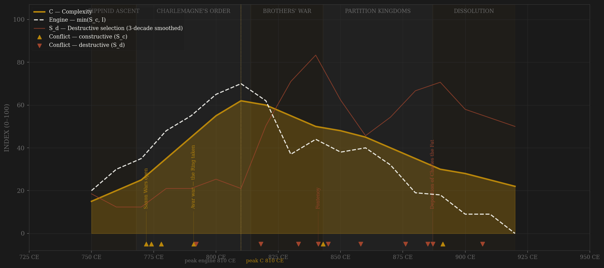
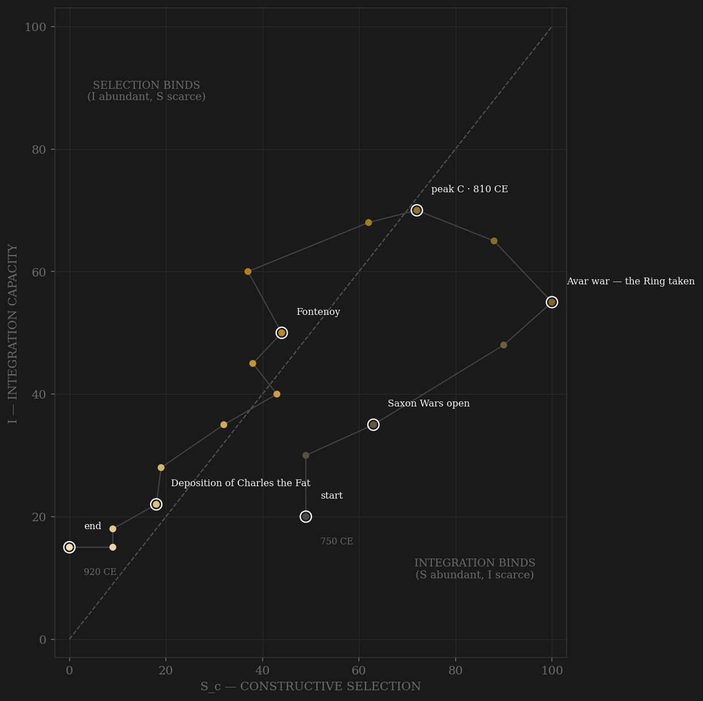

The Carolingian arc is the sample's compressed demonstration of a ladder built, used, and closed inside 170 years. The elite-entry channel is an imported meritocracy: Charlemagne recruited his court without regard to Frankish birth — Alcuin from York, Paul the Deacon from conquered Lombardy, Theodulf a Visigoth — and Einhard's rise from minor Maingau nobility to court intimacy shows the ladder working from below. The 802 reform made the missi dominici a standing, paired, non-hereditary inspectorate auditing local power, and counts in the early reigns were appointed and revocable. The contestability engine crests in the 810s, exactly where complexity does — manuscript production, the Aachen program, Einhard's generation writing — a SIMULTANEOUS verdict under v2. The external-war definition tells the neighboring story: coded on rivalry alone the engine peaks in the 790s (Saxon war, Avar campaign) and gives +20, a pass by exactly the window's edge — both are reported, and neither should be over-read on an 18-row grid. The decay is the H-RENT-001 shape drawn in miniature: benefices hereditize through the ninth century as kings buy civil-war loyalty with honores, and the capitulary of Quierzy in 877 formally concedes that a count's son succeeds — the channel-A closure document, issued sixty years after the peak. What follows is the red line's book: Fontenoy, two sieges of Paris, a deposition, and a dynasty that ends not with a battle but with an election.

The trajectory enters far right of the diagonal — a conquest house with maximum contest and almost no coordination, the Merovingian wreckage it inherited — and climbs the integration axis nearly vertically for sixty years: the Church network, the coinage, the scriptoria, the assembly system assembling itself around one court. It crosses the diagonal around 800 at the coronation and spends only two decades in balance — the apex is a visit, not a residence. Then it falls back down the integration axis almost as fast as it climbed: the partition kingdoms keep the contest (every succession fought or negotiated) while the coordination drains away — Verdun, Meerssen, the honores churned into patrimony. The path expires in the bottom-left corner, but the diagnostic is WHERE it thinned: integration was the binding constraint through the rise, the peak, and most of the fall — until the last two decades, when the ladder itself is gone and the trajectory dies just above the diagonal, selection-starved too: nothing left on either axis. The Carolingian Renaissance was real integration — but cultural-administrative only, a hub wired through one palace, with no deep trade base beneath it (contrast Abbasid or Tang), and when the succession wars cut the hub out, the spokes reverted to provinces in one long generation.
Coded by locus and target, never by outcome. The Carolingian ledger's teaching case is the partition sequence: the 840–43 civil war — Fontenoy, the dynasty's field slaughter of its own host — is S_d, but the Treaty of Verdun that ends it is coded constructive, because the division itself was processed within rules: sworn commissioners, surveys, assemblies. The machine that could no longer hold one empire could still negotiate three kingdoms bloodlessly. The Viking series splits the same way: raids answered at the frontier or the bridge-works (Pistres, Saucourt, the Dyle) discipline the state and stay in channel B; the sieges of Paris in 845 and 885–86 penetrate the core and code S_d despite external origin — the Adrianople rule. And the deposition of Charles the Fat in 887 is S_d without a battle: the assembly that had crowned emperors snapping the dynasty's governing spine by acclamation.
| YEAR | CONFLICT | CODE | CODING RATIONALE |
|---|---|---|---|
| 772 CE | Saxon Wars open | Sc | Thirty years of frontier war that builds the levy, the march system, and the missionary-administrative complex — external contest disciplining the machine |
| 774 CE | Lombard conquest | Sc | A peer kingdom absorbed whole — external rivalry settled in the field, the machinery enriched (Paul the Deacon enters the court with the spoils) |
| 778 CE | Roncesvalles | Sc | The Umayyad frontier probes back — a rearguard destroyed, the march reorganized: frontier discipline, core untouched |
| 791 CE | Avar war — the Ring taken | Sc | The great eastern rival broken 791–96, its treasure distributed through the patronage system — peak external contest |
| 792 CE | Pippin the Hunchback's conspiracy | Sd | A son's plot at the apex; conspirators executed, Pippin tonsured — aimed at the succession machinery itself (separate ledger row from the Avar war; one arc annotation) |
| 818 CE | Bernard of Italy blinded | Sd | A nephew's revolt answered with a blinding that kills him — blood at the apex under the penitential emperor; Louis does public penance for it at Attigny 822 |
| 833 CE | Field of Lies | Sd | The army defects on the Rotfeld; the emperor deposed by his sons and bishops, then restored 834 — the apex machinery attacked twice in five years (annotation carried by Fontenoy) |
| 841 CE | Fontenoy | Sd | The bloodletting — the Frankish host slaughters itself in a dynastic field battle; Nithard, who fought there, wrote its epitaph |
| 843 CE | Treaty of Verdun | Sc | The partition NEGOTIATED — sworn commissioners, surveys, assemblies: the bloodless division after the bloodletting is within-rules contest (channel C), coded constructive by locus (separate ledger row from Fontenoy; one arc annotation) |
| 845 CE | Ragnar sacks Paris | Sd | The Seine fleet at the core city, bought off with 7,000 pounds of silver — external origin, core penetration: the Adrianople rule |
| 858 CE | Louis the German invades the West | Sd | Brother against brother — an anointed king's realm invaded by his own house while the Vikings burn the Loire |
| 876 CE | Andernach | Sd | Charles the Bald attacks his nephew's inheritance and is routed — the dynasty raiding itself |
| 885 CE | Viking siege of Paris | Sd | The Great Army at the core for a year, 885–86; the emperor buys it off and redirects it at Burgundy — core penetration and a crown discrediting itself in one act (annotation carried by the deposition) |
| 887 CE | Deposition of Charles the Fat | Sd | The last sole emperor removed by assembly — no battle, no blood, and the dynasty's governing spine snapped: violence to the coordination machinery by acclamation |
| 891 CE | Dyle | Sc | Arnulf breaks the Great Army in the field — the East Frankish kingdom still answers the frontier with a royal host |
| 907 CE | Magyar storm — Pressburg | Sd | The Bavarian host annihilated, then the raids ride the interior (Brenta 899, first Lechfeld 910) — penetration past any frontier, into the core provinces |
| COMPONENT | GRADE | BASIS |
|---|---|---|
| S_c A — Elite-entry (0.40) | ○ scholar-coded | Palace-school recruitment (Alcuin, Theodulf, Paul the Deacon — the imported meritocracy), Einhard's rise, missi dominici as paired non-hereditary inspectorate (802 reform), monastic career ladders, counts appointed-and-revocable; decay via benefice heritability through the 9th c. and Quierzy 877 (comital heritability formalized — the channel-A closure document). Coded per decade from McKitterick, Charlemagne (2008); Costambeys/Innes/MacLean, The Carolingian World (2011); Nelson, Charles the Bald (1992); MacLean, Kingship and Politics in the Late Ninth Century (2003); de Jong, The Penitential State (2009). Chapter-level cites in the ledger |
| S_c B — External rivalry (0.30 cap) | ○ scholar-coded | Saxon wars 772–804, Lombard conquest, Umayyad frontier, Avar war 791–96, Viking/Magyar defense while the frontier held (Pistres 864, Saucourt 881, Dyle 891) — coded from McKitterick (2008) ch.2 and the Royal Frankish Annals tradition. This channel alone = the frozen Sc_v1_combat column |
| S_c C — Internal within-rules (0.30) | ○ scholar-coded | Placitum assemblies + capitulary consultation (McKitterick ch.4), synod politics (Frankfurt 794, the Lothar II divorce fought through councils), Ordinatio imperii 817, partition negotiation when bloodless — Verdun 843, Meerssen 851/870, Coulaines 843. Even the 833 deposition ran on procedure (bishops' judgment, assembly reversal 834) |
| S_d — Destructive | ○ scholar-coded | Locus-and-target ledger: Grifo, Pippin the Hunchback 792, Bernard of Italy 817–18, the 830/833–34 rebellions, the 840–43 civil war (Fontenoy), the 858 invasion, Andernach 876, Boso 879, Paris 845 and 885–86 (core penetration), the 887 deposition, Odo vs Charles the Simple, Magyar interior penetration 899–910. Per-decade rationale in coding_ledger_v2.csv |
| I — Integration | ○ scholar-coded | Inherited composite column (Carolingian Renaissance as administrative-cultural integration: scriptoria count 0→90+, standardized coinage and minuscule, Church network, road restoration — McKitterick 1994, Verhulst 2002) — preserved untouched from the original build |
| C — Complexity | ○ scholar-coded | Inherited column: manuscript production per decade (Bischoff's 50,000+ produced / ~7,000 surviving — the best quantitative proxy in early medieval Europe), institutional formation, architectural output. Preserved untouched |
| E — Entropy / R — Population | ○ scholar-coded | Inherited columns; R is Frankish population in millions (McEvedy & Jones), ~15M → ~30M peak → ~21M. E from Viking destruction, partition, castellan drift (Nelson 1992, MacLean 2003, Wickham 2009) |
18 decade rows (750–920). Sc/Sd decomposition built STRAIGHT to definition v2 (contestability composite, 0.40 elite-entry / 0.30 external hard cap / 0.30 internal within-rules) by scripts/build_carolingian_sicre.py, 2026-07-06; per-decade channel scores and chapter-level citations in data/raw/carolingian/coding_ledger_v2.csv; all pre-existing columns preserved untouched. BOTH DEFINITIONS REPORTED per the v2 amendment: v2 contestability lag +0 (engine 810 = C 810, SIMULTANEOUS); v1 external-war-only lag +20 (engine 790 → C 810, PASS — sitting exactly on the window's lower edge, a knife-edge pass on an 18-row grid; one ordinal point would move it). The definitions differ by two decades and neither should be over-read at this resolution. Standing caveat for ○ scholar-coded polities: SIMULTANEOUS verdicts cluster in this evidence tier (gupta, achaemenid, sasanian, now carolingian and andalus) — the same historians' narrative may feed both the contestability coding and the complexity coding, correlating S and C by construction; headline stats are reported all-polities AND thick-evidence-only. Frozen protocol throughout: 3-decade centered rolling mean, engine = min(S_c, I). Quierzy 877 is flagged as H-RENT-001 material (channel-A closure by statute six decades after peak C) but no pooled test has been run — the prereg stays sealed. Rebuild: build_carolingian_sicre.py, then polity_report.py --slug carolingian.